Usuario Alcatel¶
Usuario Alcatel.
Ver Contenido¶
1- Hacer click en “Temas” en el menú superior.
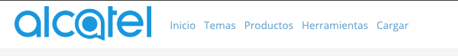2- Esta seccion muestra todos los Clientes que Maneja
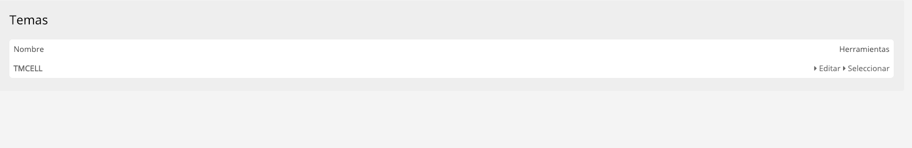3- Dentro de cada Cliente se puede ver el contenido que hay dentro de cada collección
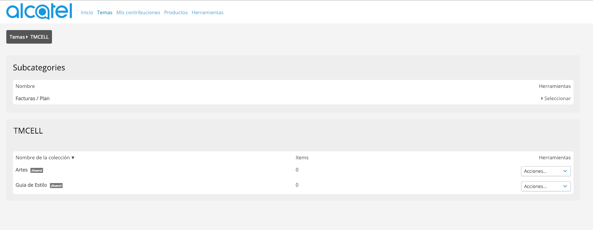
Agregar Categorias¶
Para agregar más categorias a “Productos” o “Herramientas” se debe crear una subcollección con el nombre deseado.
1- Hacer click en “Mis Collecciones” en el menú superior.
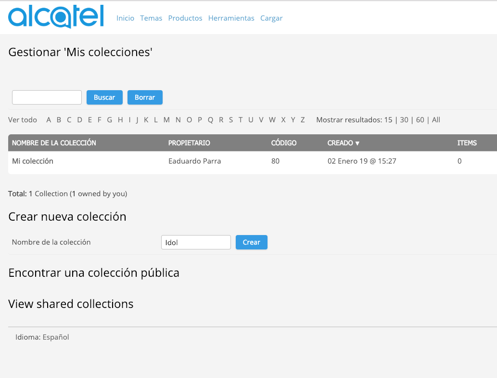2- En la pantalla de Nueva colección agregar la información correspondiente a dicha categoria.
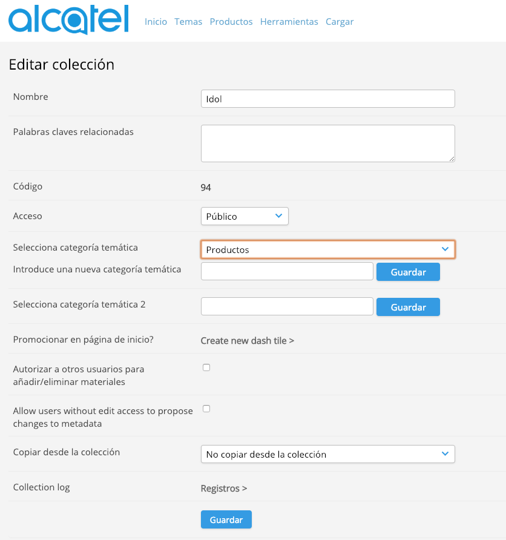3- Selecciona la Temática a la que pertence.
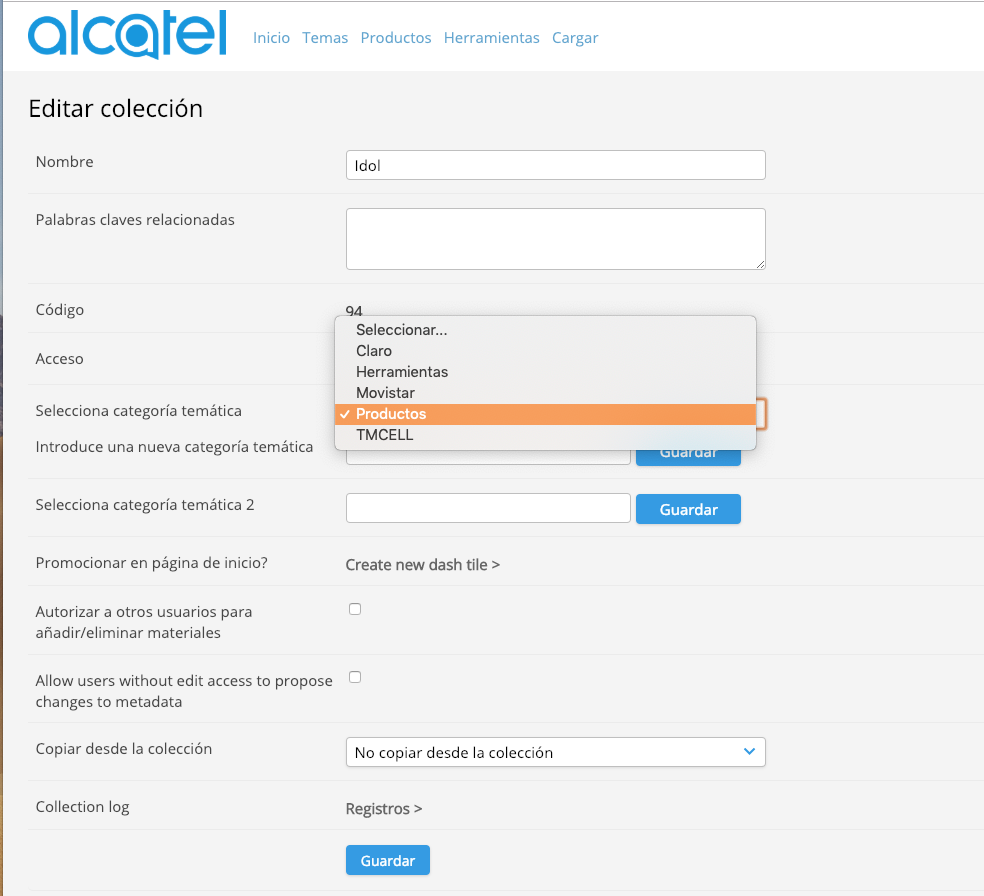Warning
Si seleccionas una categoria que no sea Herramientas o Productos, la collección se creara en una categoria erronea
4- Dentro de cada Cliente se puede ver el contenido que hay dentro de cada collección
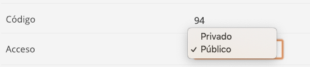
Revisión de Contenido¶
1- Seleccion la opcion de “Mis acciones” en el menu superior derecho.

2- En la pantalla de Mis acciones se podrán observar todas las acciones pendientes por la agencia
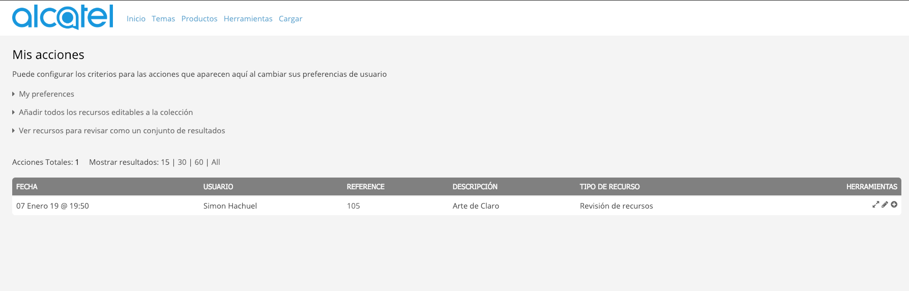3- Para iniciar una revisión hay que hacer click en el siguiente icono (Flechas diagonales)
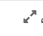4- Luego de revisar toda la información del contenido en la seccion de “Workflow” se podra decidir si enviar el Arte a el usuario “Alcatel” o Rechazar la misma para que el usuario pueda hacer cambios al contenido.
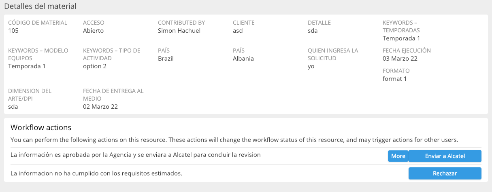5- Al seleccionar una opción el usuario sera redireccionado a los detalles del contenido y un mensaje en la parte superior confirmando el cambio de estado del mismo.
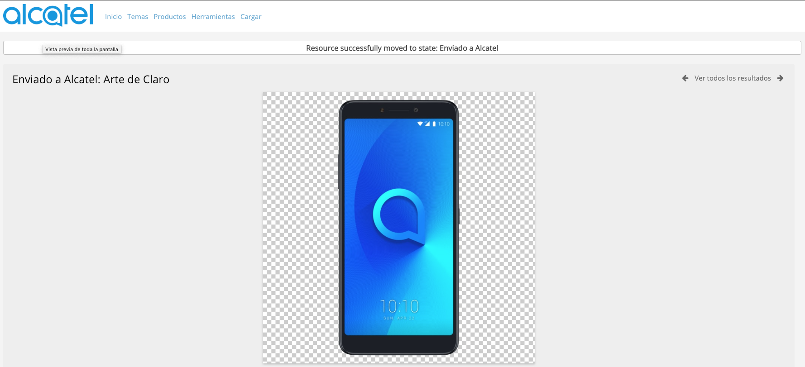